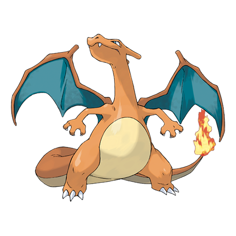

リザードンの弱点（2倍）
みず でんき いわ
#006 · ほのお／ひこう · かえんポケモン · 第1世代
かえんポケモンにして、第1世代の非公式な顔。リザードンはアニメで爆発的に人気が出て、そのまま主役の座を離さなかった紙装甲のアタッカーです。

BST 534
とくせい：もうか・サンパワー（隠れ特性） · 進化段階：最終進化
18タイプすべての相性表は、 タイプ相性表.
みず でんき いわ
ほのお くさ かくとう むし はがね フェアリー
じめん
ポケモン図鑑は拡充中です。こちらのページは公開済みです。
ポケモンのデータと豆知識
リザードンはヒトカゲの最終進化で、ほのおタイプのカントー御三家です。ヒトカゲから36レベルかけて育ち、数値は紙装甲のアタッカーが欲しがる場所にきれいに寄っています。とくこう109、素早さ100。守りが問題になる前に決着をつける形です。シリーズの売り文句そのものを体現するポケモンでもあります。アニメが「エース」の代名詞にし、カードは史上最も有名な1枚になり、ゲーム側も外伝やメガシンカで特別扱いを続けてきました。本編でのタイプは1996年からずっとほのお／ひこうのままです。
「こいつはドラゴンなのか」という疑問が30年ついて回っています。答えは最初から変わっていません。本編では違います。メガリザードンXはほのお／ドラゴンですし、カードでもその解釈で遊ばれましたが、種族そのものはほのお／ひこうです。印象とデータのこのズレは、リザードンの人気のどれだけが仕様ではなく売り方で作られたかを、少しだけ教えてくれます。
合計534にとくこう109、素早さ100は、特殊アタッカーの体です。もうかはHPが3分の1を切るとほのお技を強化するので、立て直しのクッションになります。本命はサンパワーで、晴れのあいだとくこうが1.5倍になるかわりに毎ターンHPを1/8失います。どちらも、短期決着を狙う攻めの戦い方に報いる特性です。
HP78にぼうぎょ78という数字が、リザードンをガラスのように感じさせる原因です。いわ技は4倍で通ります（ひこうの弱点が2倍で重なるため）。ステルスロックだけで、何かが起きる前にHPの3分の1を持っていかれることもあります。だからこそリザードンは耐久型になれませんでした。先に当てて大きく削るために作られていて、使えるかどうかはそれができるかにかかっています。
シングルでは、メガリザードンYが目立ちます。技を選ぶ前にひでりで天候を取れるからです。晴れは毎ターンほのお技を1.5倍にし、撃ちたいオーバーヒートとも重なり、ソーラービームを1ターン技に変えます。葉緑素持ちのスイーパーと組ませるのが定番の形で、そういう構築を数分で組めるのが パーティ編成 です
メガリザードンXは、その火力と引き換えに場への圧力を取ります。ほのお／ドラゴンにかたいツメというのは珍しい組み合わせで、こうげき130でドラゴンクローまで使えるとなれば、環境のほとんどが想定していない突破役になります。ダブルでは役割が分かれ、Yは純粋な火力、Xは硬い積み役です。リザードンの対戦史は長く、どちらの姿にも見せ場があります。そこまで恵まれているポケモンは多くありません。
ふつうに本編を遊ぶ人にとっても、リザードンは枠に値します。ほのお／ひこうは序盤の道や中盤のジムに刺さりますし、レベル36のかえんほうしゃは思うより簡単な答えです。いわ4倍が効いてくるのは終盤、四天王やチャンピオンが岩や地面の技を並べてくるあたり。それでも素早さに少し努力値を振ってほのお技を1つ持たせておけば、地方が投げてくる相手の大半は片付きます。
リザードンの弱点は覚えやすく、避けにくいものです。いわの4倍。どの地方を初見で旅するにしても、これがリザードンについての正直な評価になります。速くて強いアタッカーが1匹、タイプに痛い穴が1つ、そして絶対に見放さないファンがついてくる。そういうポケモンです。
みず、でんき、いわが2倍で、じめんは完全に無効。地味に一番おいしいのはこのじめん無効です。20年ものあいだ世界で最も使われてきた範囲技、じしんが通らないわけですから。でんきの弱点は逆方向に効いていて、ボルトチェンジが流行った時期や、相手のチームにはがねが1匹だけ石を持たずにいる、といった事情で残り続けています。
罠は岩です。いわ4倍ということは、ストーンエッジ1発、いわなだれ1発、あるいは相手の設置技だけで、その試合からリザードンが消えるということです。先発は避ける、HPは常に保つ、ふうせんを持たせる。このどれかが必要になります。耐性側は6タイプあり、1ターン耐えたリザードンは次に来るものの大半に答えを返せます。
アルゴリズムが選んでくれたなら、そのまま連れて行きましょう。 ランダム選出 がそのうち1匹を回してくれますし、 ランダムメガシンカ ならメガXやメガYを直接引けます。ヌズロックでは、この1匹がチームに入ると盛り上がるもの。ルールは ヌズロック編成 で確認して、相性の不利はタイプ相性表で埋め合わせましょう
細かい調整はほかのツールで。 ポケモン性格表 はY型ならひかえめ、X型ならようきを勧めてくれます。 個体値計算 を使えば、ぎんのおうかんを使う前に数値を確認できます。ポケモン チームピッカーならチームへの組み込みまで。色違いの話は 色違いの出現率 で計算を、 ランダム色違い生成 で気軽に遊べます
対戦分析
リザードンの作戦が乗っているのは、とくこう109という数値です。素早さ100があるので、崩したい相手にはたいてい先に撃てます。隠れ特性のサンパワーはもっと極端で、強い日差しのあいだとくこうは1.5倍、実質163になります。その代わり毎ターンHPを1/8失う。壁崩しの交換レートとしては納得の数字で、晴れパーティが元気なリザードンを削り役ではなく勝ち筋として扱う理由もここにあります。
範囲技を全部取っ払うと、残るタイプはひとつ。いわです。18タイプのうち、リザードンの一致技2つを両方受けられるのはいわだけ。しかもそのいわが、返しに4倍で刺さります。みずとでんきも2倍を上乗せしてきます。つまり答えは短く、いわ、みず、でんき、そして素早さ100を超える相手です。
覚える技でそのリストの大半は返せます。主役はソーラービーム。威力120で、晴れなら溜めなしで撃てて、みずといわに2倍で通ります。じしんは、安全だと思って交代してくるいわやでんきに刺さります。ほのお、ひこうに加えて覚える131の技を並べれば、リザードンはすべてのタイプに抜群を取れる計算になります。いわ4倍が消えるわけではありません。それでも、完全に受け切れる相手はいなくなるという意味です。
よくある質問
いいえ。本編ではどの作品でもほのお／ひこうです。ドラゴンとして扱われるのはカードとメガリザードンX（ほのお／ドラゴン）だけ。アニメやグッズがドラゴン的な見せ方を押し出したせいで混同されがちですが、ゲーム側がタイプを変えたことはありません。
みず、でんき、いわが2倍で、ひこうのおかげでじめんは無効です。耐性はほのお、くさ、かくとう、むし、はがね、フェアリー。いわ4倍があるので、いわなだれ1発で試合の行方がほぼ決まってしまいます。
メガリザードンXはほのお／ドラゴン、こうげき130、ぼうぎょ111にかたいツメで、物理アタッカーとして動きます。メガリザードンYはほのお／ひこう、とくこう159にひでりで、即席の晴れを伴う火力役です。積みと範囲を取るならX、純粋なダメージならYです。
534は悪くありませんが、最上位ではありません。支えているのはとくこう109と素早さ100で、HP78、ぼうぎょ78、とくぼう85という並びが物理側のもろさになります。長く生き残るのではなく、先に強く当てて勝つポケモンです。
ヒトカゲがレベル16でリザードに、リザードがレベル36でリザードンになります。レベルによる進化はここで終わりで、メガシンカは戦闘中だけの変化です。
基本はもうかで、HPが減るとほのお技が50%強化されます。隠れ特性はサンパワーで、晴れのあいだとくこう1.5倍、毎ターンHP1/8の代償つき。メガリザードンYはひでりに、メガリザードンXはかたいツメに置き換わります。